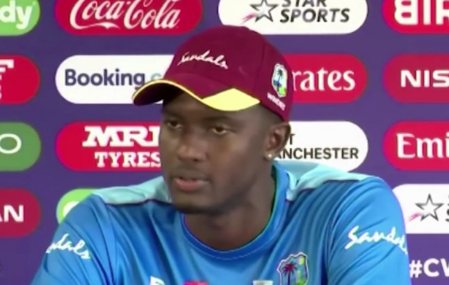

RRHACKATHON • THINK-TANK
SupeRR Selector Season 2
In high-stakes T20 cricket, reputations frequently obscure real execution under crisis. The Rajasthan Royals Analytics Think-Tank isolates players whose performance surges when single deliveries swing match victory probability, evaluated across 200,999 historical ball-by-ball records.
Individual performance profiles and tactical rationales for the designated 10 Batters and 10 Bowlers.
Selected on Unstop submission dropdowns | Evaluated on run velocity, dot resistance, chase finishes and wicket security.
| Rank | Player Name | Hand | Role Archetype | Pressure Balls | Pressure Runs | Pressure SR | Death SR (16–20) | Dot % | Boundary % | Chase Finishes | Balls / Dismissal |
|---|---|---|---|---|---|---|---|---|---|---|---|
| #1 | Tim David | RHB | Death Power Hitter / Finisher | 828 | 1,503 | 181.52 | 199.81 | 30.4% | 25.7% | 15 | 16.9 |
| #2 |  Namboori Tilak Varma Namboori Tilak Varma |
LHB | Crisis Finisher / Chase Master | 1,465 | 2,190 | 149.49 | 191.88 | 30.4% | 18.8% | 21 (Most in IPL) | 27.1 |
| #3 |  Virat Kohli Virat Kohli |
RHB | Master Anchor / Chase Specialist | 896 | 1,413 | 157.70 | 186.53 | 27.7% | 21.5% | 9 | 27.2 (Wicket Anchor) |
| #4 |  Rajat Patidar Rajat Patidar |
RHB | Middle-to-Death Spin Enforcer | 461 | 739 | 160.30 | 217.00 (Elite) | 32.5% | 22.3% | 1 | 17.1 |
| #5 |  Heinrich Klaasen Heinrich Klaasen |
RHB | Zero-Dot Spin Demolisher | 864 | 1,500 | 173.61 | 198.97 | 25.3% (Elite) | 23.0% | 5 | 20.6 |
| #6 | Tristan Stubbs | RHB | 360° Strike Rotator & Closer | 709 | 1,168 | 164.74 | 196.16 | 24.1% (Lowest) | 21.2% | 10 | 23.6 |
| #7 |  Vaibhav Sooryavanshi Vaibhav Sooryavanshi |
LHB | Generational Boundary Disruptor | 232 | 530 | 228.45 (Highest) | 290.00 | 35.8% | 38.8% (Highest) | 0 | 29.0 |
| #8 | Nicholas Pooran | LHB | Explosive Left-Handed Finisher | 1,010 | 1,672 | 165.54 | 190.07 | 33.9% | 23.5% | 12 | 21.0 |
| #9 | David Miller | LHB | Veteran Closer / Ice-Man | 901 | 1,421 | 157.71 | 174.07 | 28.3% | 20.3% | 15 | 21.5 |
| #10 |  Suryakumar Yadav Suryakumar Yadav |
RHB | 360° Match Winner / Enforcer | 1,301 | 2,289 (Most) | 175.94 | 217.22 | 31.4% | 26.7% | 12 | 21.7 |
Selected on Unstop submission dropdowns | Evaluated on field execution (dot %), run containment, partnership breakers and winning hauls.
| Rank | Player Name | Bowling Style | Pace / Spin | Pressure Balls | Pressure Econ | Death Econ (16–20) | Dot % | Total Wkts | Death Wkts | Part. Breakers | Winning Hauls |
|---|---|---|---|---|---|---|---|---|---|---|---|
| #1 |  Josh Hazlewood Josh Hazlewood |
Right-arm fast-medium | Pace | 847 | 8.17 | 9.47 | 43.4% (Highest) | 62 | 30 | 8 | 14 |
| #2 | Jasprit Bumrah | Right-arm Fast | Pace | 957 | 7.00 (Elite) | 7.19 (Lowest) | 42.5% | 52 | 35 | 13 | 12 |
| #3 | Arshdeep Singh | Left-arm medium-fast | Pace | 1,585 | 8.81 | 9.46 | 36.8% | 109 (Most in IPL) | 75 (Most in IPL) | 33 (Most in IPL) | 18 |
| #4 |  Rashid Khan Rashid Khan |
Right-arm Leg-Break | Spin | 1,386 | 7.46 | 8.63 | 36.0% | 86 | 51 | 22 | 19 (Most in IPL) |
| #5 |  Bhuvneshwar Kumar Bhuvneshwar Kumar |
Right-arm medium | Pace | 1,144 | 8.56 | 9.63 | 36.0% | 61 | 42 | 17 | 9 |
| #6 |  Yuzvendra Chahal Yuzvendra Chahal |
Right-arm Leg-Break | Spin | 1,230 | 8.77 | 9.91 | 29.9% | 76 | 34 | 23 | 14 |
| #7 |  Matheesha Pathirana Matheesha Pathirana |
Right-arm Fast (Sling) | Pace | 693 | 7.70 | 8.18 | 37.4% | 57 | 44 (in 693 balls) | 15 | 8 |
| #8 |  Wanindu Hasaranga Wanindu Hasaranga |
Right-arm Leg-Break | Spin | 895 | 8.27 | 8.38 | 36.1% | 73 | 27 | 23 | 14 |
| #9 |  Jason Holder |
Right-arm medium-fast | Pace | 1,077 | 8.59 | 9.82 | 33.8% | 70 | 43 | 19 | 11 |
| #10 | Krunal Pandya | Slow left-arm orthodox | Spin | 581 | 7.39 | 10.09 | 32.7% | 28 | 5 | 9 | 7 |
Objective mathematical foundation combining dynamic Win-Probability leverage with contextual crisis rules.
For chasing innings (Innings 2), a logistic regression model predicts victory probability P(Win) from state vector X = [Runs Needed, Balls Remaining, Wickets in Hand, RRR].
Every legal delivery t quantifies how drastically discrete outcomes alter the match trajectory.
Tags deliveries as is_pressure = 1 across 1st innings and defensive phases under boundary rules:
Preventing small-sample anomalies and era-skewed baselines:
Empirical proof that rankings reflect repeatable, stable skill under crisis rather than random noise (N ≈ 190 players across odd/even matches).
| Evaluated Metric | Pearson Correlation (r) | Spearman Rank (ρ) | p-value | Statistical Conclusion |
|---|---|---|---|---|
| Batter Pressure Strike Rate | 0.341 | 0.321 | < 1.2 × 10−6 | High stability across independent matches |
| Batter Dot-Ball Resistance | 0.382 | 0.365 | < 4.1 × 10−8 | Extremely stable individual characteristic under pressure |
| Bowler Field Execution (Dot %) | 0.344 | 0.328 | < 9.1 × 10−7 | Confirms field execution is a repeatable bowling skill |
| Bowler Death Wicket Rate | 0.315 | 0.302 | < 3.5 × 10−5 | Genuine clutch wicket-taking capability at the death |